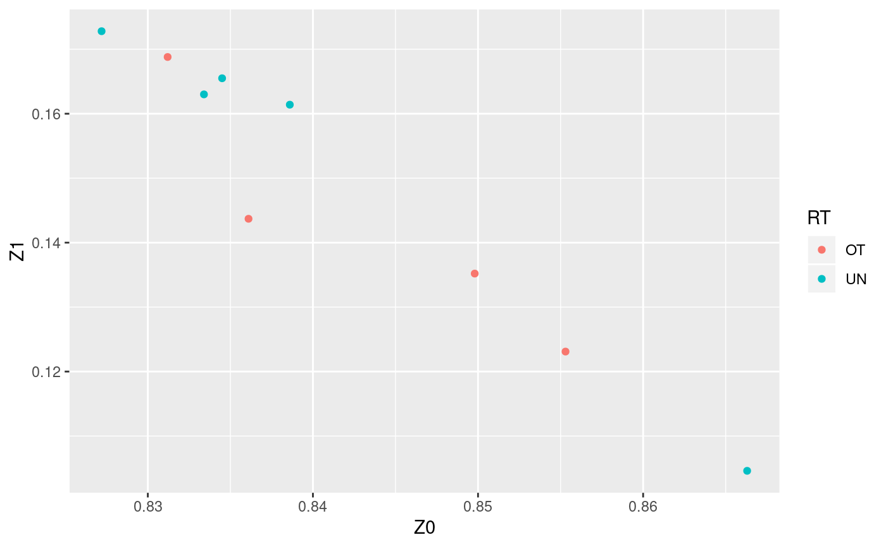
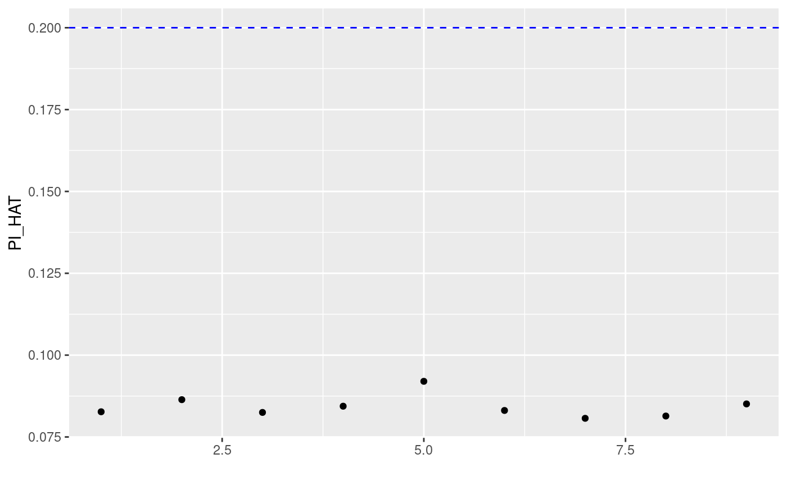

snp_plinkIBDQC.RdQuality Control based on Identity-by-descent (IBD) computed by PLINK 1.9 using its method-of-moments.
snp_plinkIBDQC(plink.path, bedfile.in, bedfile.out = NULL, pi.hat = 0.08, ncores = 1, pruning.args = c(100, 0.2), do.blind.QC = TRUE, extra.options = "")
| plink.path | Path to the executable of PLINK 1.9. |
|---|---|
| bedfile.in | Path to the input bedfile. |
| bedfile.out | Path to the output bedfile. Default is created by
appending |
| pi.hat | PI_HAT value threshold for individuals (first by pairs)
to be excluded. Default is |
| ncores | Number of cores used. Default doesn't use parallelism. You may use nb_cores. |
| pruning.args | A vector of 2 pruning parameters, respectively
the window size (in variant count) and the pairwise $r^2$ threshold
(the step size is fixed to 1). Default is |
| do.blind.QC | Whether to do QC with |
| extra.options | Other options to be passed to PLINK as a string (for the IBD part). More options can be found at https://www.cog-genomics.org/plink/1.9/ibd. |
The path of the new bedfile. If no sample is filter, no new bed/bim/fam files are created and then the path of the input bedfile is returned.
Purcell, Shaun, Benjamin Neale, Kathe Todd-Brown, Lori Thomas, Manuel A R Ferreira, David Bender, Julian Maller, et al. 2007. PLINK: a tool set for whole-genome association and population-based linkage analyses. American Journal of Human Genetics 81 (3). Elsevier: 559–75. http://dx.doi.org/10.1086/519795.
Chang, Christopher C, Carson C Chow, Laurent CAM Tellier, Shashaank Vattikuti, Shaun M Purcell, and James J Lee. 2015. Second-generation PLINK: rising to the challenge of larger and richer datasets. GigaScience 4 (1): 7. http://dx.doi.org/10.1186/s13742-015-0047-8.
bedfile <- system.file("extdata", "example.bed", package = "bigsnpr") plink <- download_plink() test <- snp_plinkIBDQC(plink, bedfile, bedfile.out = tempfile(fileext = ".bed"), ncores = 2) test#> [1] "/tmp/Rtmpb8hG7s/file3f4b247244.bed"#> 'data.frame': 1648 obs. of 14 variables: #> $ FID1 : chr "POP1" "POP1" "POP1" "POP1" ... #> $ IID1 : chr "IND0" "IND1" "IND3" "IND6" ... #> $ FID2 : chr "POP2" "POP4" "POP3" "POP1" ... #> $ IID2 : chr "IND35" "IND84" "IND76" "IND17" ... #> $ RT : chr "UN" "UN" "UN" "OT" ... #> $ EZ : int NA NA NA 0 0 0 0 0 NA 0 ... #> $ Z0 : num 0.829 0.84 0.764 0.837 0.801 ... #> $ Z1 : num 0.171 0.16 0.236 0.163 0.189 ... #> $ Z2 : num 0 0 0 0 0.0094 0 0 0.0373 0 0 ... #> $ PI_HAT: num 0.0854 0.0802 0.1181 0.0813 0.104 ... #> $ PHE : int -1 -1 -1 -1 -1 -1 -1 -1 -1 -1 ... #> $ DST : num 0.706 0.699 0.71 0.696 0.717 ... #> $ PPC : num 0.76 0.921 0.327 0.24 0.815 ... #> $ RATIO : num 3.5 8 1.5 1.25 4 4 4 3.5 1.5 9 ...snp_plinkRmSamples(plink, bedfile, bedfile.out = tempfile(fileext = ".bed"), df.or.files = subset(test2, PI_HAT > 0.2))#> [1] "/tmp/Rtmpb8hG7s/file3f42db4aa64.bed"